This post is based on the presentation during the lab meeting on 2023-11-28.
Heliophysics 2024 Decadal Whitepapers
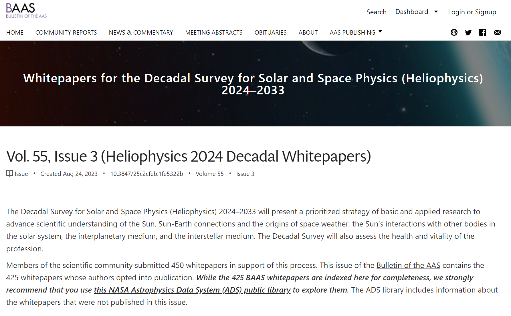
3D Storage & Release (Caspi et al. 2023)
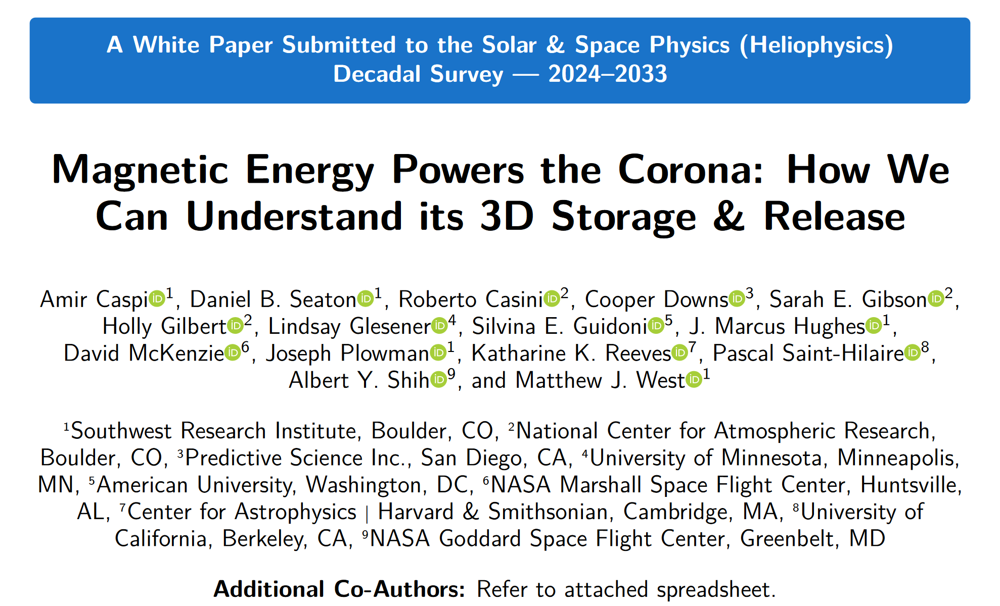
Solar eruptions - Storage & Release (Caspi et al. 2023)
- Coronal mass ejections (CMEs)
- Solar flares
- eruptive flares : flares with a CME
- confined flares : flares not associated with a CME
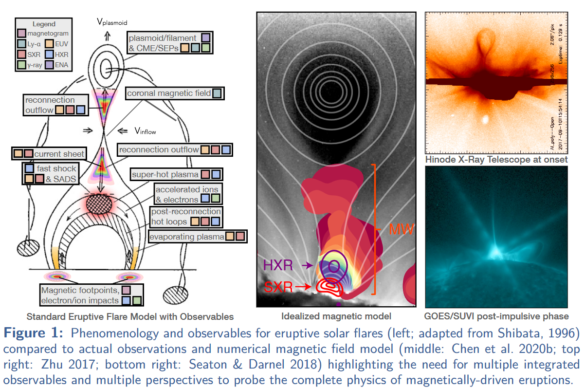
The Big Open Questions (Caspi et al. 2023)
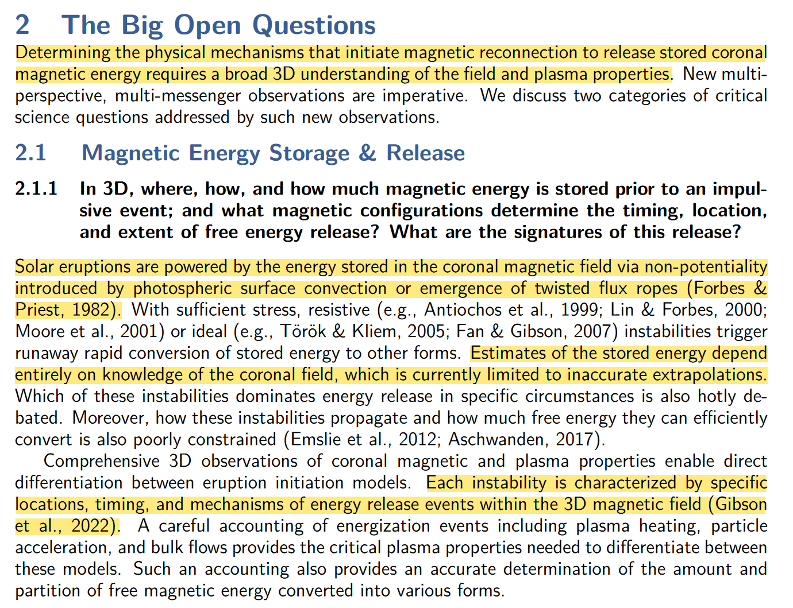
3D Knowledge (Caspi et al. 2023)
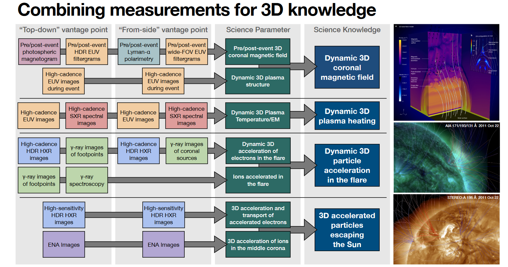
Solar magnetic field models
- Static model (time-independent); \mathbf{v} = \mathbf{0}
- Force-free field model : initial condition of MHD simulations
- pros: related with magnetic field observations directly
- cons: cannot explain the forced structures in the photosphere and lower chromosphere and their dynamical evolution
- Magnetohydrostatic (MHS) model
- pros: partly overcome the disadvantage of the force-free field model
- cons: still static model
- Force-free field model : initial condition of MHD simulations
- Dynamic model (time-dependent); \mathbf{v} \neq \mathbf{0}
- Magnetohydrodynamic (MHD) model
- pros: may provide the best way to study the observed complex magnetic structures and dynamical evolution
- cons: the most difficult, complicated and expensive model
- Magnetohydrodynamic (MHD) model
Plasma \beta in the solar atmosphere
- \beta = \dfrac{p}{\frac{B^2}{8\pi}} is the ratio of gas pressure to magnetic pressure (cgs-Gaussian unit)
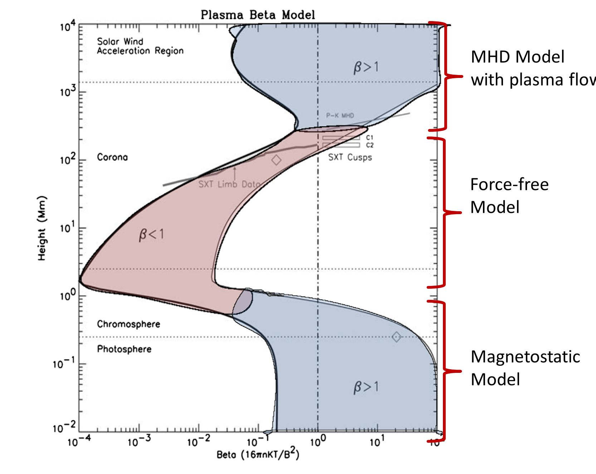
Suggested physical mechanisms
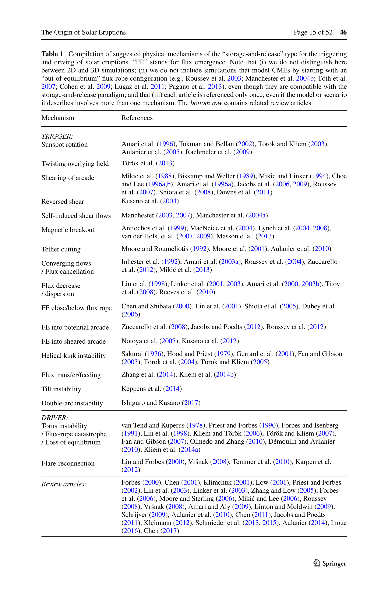
Magnetic fields
- Fundamental quantities
- Energy
- Helicity
- Surface-calculated quantities
- Instabilities
- Kink instability
- Torus instability
- Double arc instability
- Magnetic topology analysis (magnetic reconnection)
- Separatrices
- Quasi-Separatrix Layers (QSLs)
Magnetic energy
- Total magnetic energy E in a volume V (cgs-Gaussian units)
E = \frac{1}{8\pi} \int_{V} B^2 \rm{d}V
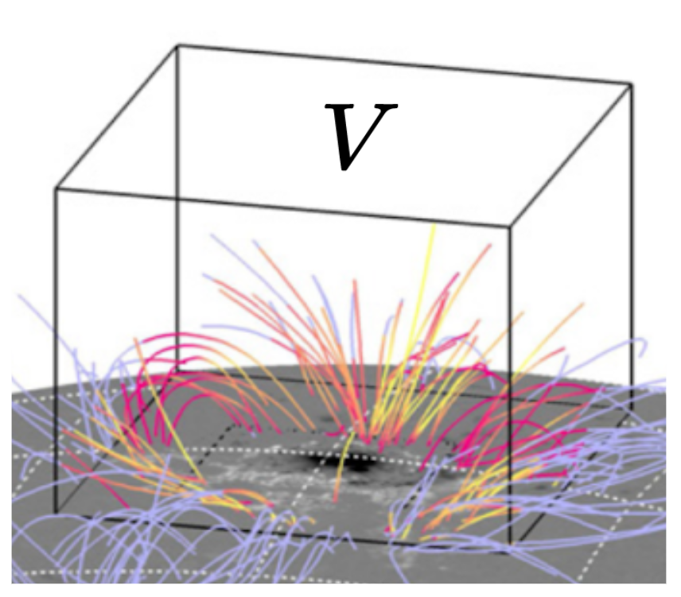
Helmholtz decomposition
- Magnetic field
\mathbf{B} = \mathbf{B}_\text{p} + \mathbf{B}_\text{J}
- Potential (current-free) field
\mathbf{B}_\text{p} = \nabla \phi
- Non-potential (current-carrying) component of the magnetic field
\mathbf{B}_\text{J} = \mathbf{B} - \mathbf{B}_\text{p}
- Current density in MHD (cgs-Gaussian units)
\mathbf{J} = \frac{1}{4\pi} \nabla \times \mathbf{B}
Potential field
- Usually, the potential field \mathbf{B}_p is computed from the same distribution of normal field of \mathbf{B} on the boundary of V.
(\mathbf{\hat{n}} \cdot \mathbf{B}_\text{p})|_{\partial V} = (\mathbf{\hat{n}} \cdot \mathbf{B})|_{\partial V}
- Then, the potential field \mathbf{B}_\text{p} = \nabla \phi is calculated by solving the Laplace equation with the Neumann boundary condition.
\begin{cases} \nabla^2 \phi &= 0\\ (\mathbf{\hat{n}} \cdot \nabla \phi)|_{\partial V} & = (\mathbf{\hat{n}} \cdot \mathbf{B})|_{\partial V} \end{cases}
- With such a prescription, the potential field is chosen as a reference is uniquely defined and represents the minimal energy state for a given distribution of the normal component of the field on the boundaries.
Magnetic free energy
- Without changing the field significantly at the boundaries of the considered volume, the energy that can be converted into kinetic and thermal energies is given by the free enery, i.e., by the difference between the total magnetic energy and the energy of the corresponding current-free (potential) field.
E_\text{free} = E - E_\text{p}
- To use this formula, the magnetic field must be divergence-free (solenoidal).
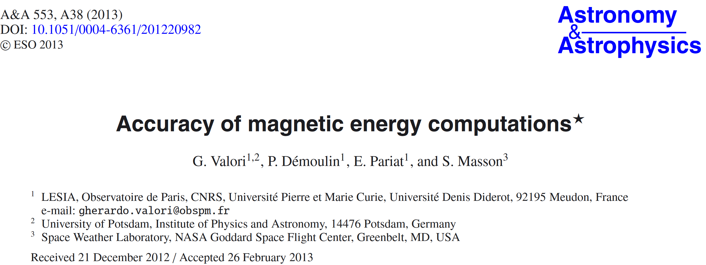
Accuracy of magnetic energy computations (Valori et al. 2013)
- Decomposition of the magnetic energy (Thomson’s theorem extended by Valori et al. 2013)
E = E_\text{p, s} + E_\text{J, s} + E_\text{p, ns} + E_\text{J, ns} + E_\text{mix}
E_\text{p, s} : energy of solenoidal component of the potential field (positive)
E_\text{J, s} : energy of solenoidal component of the current-carrying field (positive)
E_\text{p, ns} : energy of nonsolenoidal component of the potential field (positive)
E_\text{J, ns} : energy of nonsolenoidal component of the current-carrying field (positive)
E_\text{mix} : energy corresponding to all cross terms (can be negative)
\begin{align*} E_{\text{mix}} & = \frac{1}{4\pi} \left( \int_{V} \mathbf{B}_\text{p,s} \cdot \nabla \zeta \, dV + \int_{V} \mathbf{B}_\text{J,s} \cdot \nabla \psi \, dV \right. \\ & \left. + \int_{V} \mathbf{B}_\text{p,s} \cdot \nabla \psi \, dV + \int_{V} \mathbf{B}_\text{J,s} \cdot \nabla \zeta \, dV \right. \\ & \left. + \int_{V} \nabla \zeta \cdot \nabla \psi \, dV + \int_{V} \mathbf{B}_\text{p,s} \cdot \mathbf{B}_\text{J,s} \, dV \right) \end{align*}
Accuracy of magnetic energy computations (Valori et al. 2013)
- For a perfectly solenoidal field,
E = E_\text{p, s} + E_\text{J, s}
E_\text{J, s} = E - E_\text{p, s}
- The free energy of the field is the energy of the solenoidal component of its current-carrying part
E_\text{free} = E_\text{J, s}
- For a nonsolenoidal field, \tilde{E}_\text{free} even can be negative.
\begin{align*} \tilde{E}_{\text{free}} & = E - E_\text{p} \\ & = E - (E_\text{p, s} + E_\text{p, ns}) \\ & = E_\text{J, s} + E_\text{J, ns} + E_\text{mix} \\ & = E_\text{free} + E_\text{J, ns} + E_\text{mix} \\ \end{align*}
Accuracy of magnetic energy computations (Valori et al. 2013)
- E_\text{div} : upper limit of the energy associated with all non-solenoidal components
E_\text{div} = E_\text{p, ns} + E_\text{J, ns} + |E_\text{mix}|
- At least (Valori et al. 2016),
E_\text{div} / E < 0.1
- More strictly (Thalmann et al. 2019),
E_\text{div} / E \lesssim 0.05
- Simpler test (Mastrano et al. 2018) \nabla \cdot \mathbf{B} = 0 \Rightarrow W_\text{f1} = W_\text{f2} (inverse is not true)
W_\text{f1} = \frac{1}{8\pi} \int_V (\mathbf{B} - \mathbf{B}_\text{p})^2 \rm{d}V
W_\text{f2} = \frac{1}{8\pi} \int_V \mathbf{B}^2 \rm{d}V - \frac{1}{8\pi} \int_V \mathbf{B}_\text{p}^2 \rm{d}V
How to calculate potential field \mathbf{B}_\text{p} = \nabla \phi
- \mathbf{\hat{n}} \cdot \mathbf{B} is given on the all boundaries
- Solve Laplace equation directly
\begin{cases} \nabla^2 \phi &= 0\\ (\mathbf{\hat{n}} \cdot \nabla \phi)|_{\partial V} & = (\mathbf{\hat{n}} \cdot \mathbf{B})|_{\partial V} \end{cases}
- \mathbf{\hat{n}} \cdot \mathbf{B} is given on the only one boundary (usually bottom one)
- Use alternative ways such as Green’s function methods (Sakurai 1982)
\phi(\mathbf{r}) = \int_{S} \frac{B_n(\mathbf{r}')}{2\pi|\mathbf{r}-\mathbf{r'}|} \rm{d}S
- If the reference potential field does not have the same normal components on all boundaries, then the potential field does not satisfy Thomson’s theorem, and does not represent the state with the minimum energy for a given distribution of magnetic field on the boundaries (Mastrano et al. 2018).
Magnetic helicity
- Classical magnetic helicity
\mathscr{H} = \int_V \mathbf{A} \cdot \mathbf{B} \rm{d}V
H_V = \int_V (\mathbf{A} + \mathbf{A}_\text{p}) \cdot (\mathbf{B} - \mathbf{B}_\text{p}) \rm{d}V
\mathbf{A} : vector potential of \mathbf{B} = \nabla \times \mathbf{A}
\mathbf{A}_\text{p} : vector potential of \mathbf{B}_\text{p} = \nabla \times \mathbf{A}_\text{p}
In order for H_V to be gauge invariant,
- \mathbf{B} and \mathbf{B}_\text{p} are solenoidal (divergence-free)
- reference field \mathbf{B}_\text{p} satisfies (\mathbf{\hat{n}} \cdot \mathbf{B}_\text{p})|_{\partial V} = (\mathbf{\hat{n}} \cdot \mathbf{B})|_{\partial V}
The usual choice of the reference field is the electirc current-free (potential) field.
Decomposition of the magnetic helicity (Berger 2003)
- Relative magnetic helicity
H_V = \int_V (\mathbf{A} + \mathbf{A}_\text{p}) \cdot (\mathbf{B} - \mathbf{B}_\text{p}) \rm{d}V
- Decomposition of H_V
H_V = H_\text{J} + H_\text{PJ}
- H_\text{J}: classical magnetic helicity of \mathbf{B}_\text{J} = \mathbf{B} - \mathbf{B}_\text{p}
H_\text{J} = \int_V (\mathbf{A} - \mathbf{A}_\text{p}) \cdot (\mathbf{B} - \mathbf{B}_\text{p}) \rm{d}V
- H_\text{PJ}: a sorf of multual helicity between \mathbf{B}_\text{p} and \mathbf{B}_\text{J}
H_\text{PJ} = 2\int_V \mathbf{A}_\text{p} \cdot (\mathbf{B} - \mathbf{B}_\text{p}) \rm{d}V
Reliability of magnetic energy and helicity computations (Thalmann et al. 2019)
- Quantitative threshold for the divergence-freeness
E_\text{div} / E \lesssim 0.05
Here, E_\text{div} = E_\text{p, ns} + E_\text{J, ns} + |E_\text{mix}| is the nonpotential contribution and E is the total magnetic energy.
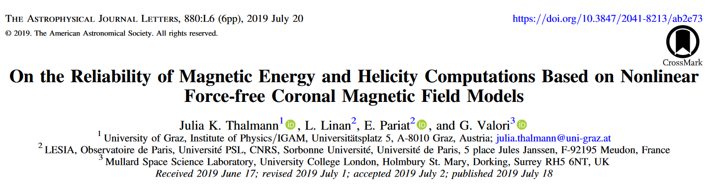
Reliability of magnetic energy and helicity computations (Thalmann et al. 2019)
NOAA 11158 between February 12 00:00 UT and February 16 00:00 UT
Free parameters
- Preprocessing (Wiegelmann et al. 2006)
- (\mu_1, \mu_2, \mu_3, \mu_4)
- NLFFF optimization method of Wiegelmann & Inhester (2010)
- (w_f, w_d, w_\text{hor}, \nu)
- Preprocessing (Wiegelmann et al. 2006)
(\mu_1, \mu_2, w_f, \nu) = (1, 1, 1, 10^{-3})
- SERIES I
- (\mu_3, \mu_4, w_d, w_\text{hor}) = (10^{-3}, 10^{-3}, 1, 1)
- SERIES II
- (\mu_3, \mu_4, w_d, w_\text{hor}) = (10^{-3}, 10^{-3}, 2, \propto B_\text{hor})
- SERIES I
Reliability of magnetic energy and helicity computations (Thalmann et al. 2019)
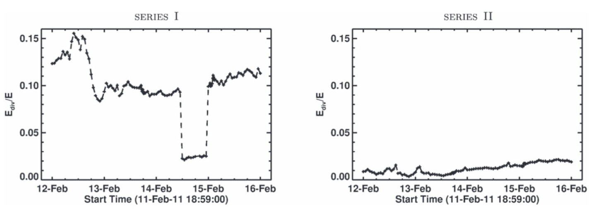
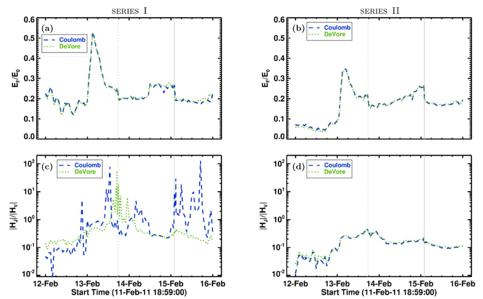
- Coulomb gauge
\nabla \cdot \mathbf{A} = \nabla \cdot \mathbf{A}_\text{p} = 0
- DeVore gauge (DeVore 2000)
A_z = A_\text{p, z} = 0
How to calculate magnetic helicity
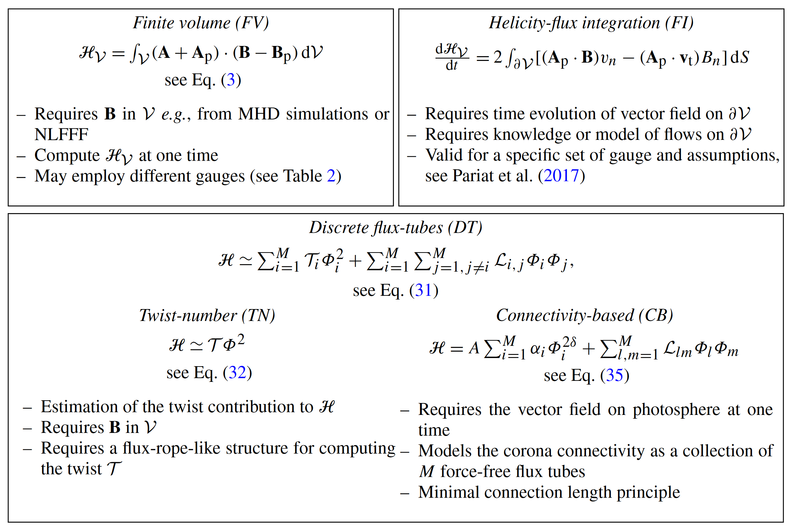
Connectivity-based methods
- Use the magnetic connectivity matrix to calculate E_\text{c} and H_m (Georgoulis et al. 2012)
\begin{align*} E_\text{c} & = E_{\text{c}_\text{self}} + E_{\text{c}_\text{mul}} \\ & = Ad^2 \sum_{l=1}^{N} \alpha_l^2 \Phi_l^{2\delta} + \frac{1}{8\pi}\sum_{l=1}^{N}\sum_{m=1, l\neq m}^{N} \alpha_l \mathcal{L}_{lm}^{\text{arch}}\Phi_{l}\Phi_{m} \end{align*}
\begin{align*} H_\text{m} & = H_{\text{m}_\text{self}} + H_{\text{m}_\text{mul}} \\ & = 8\pi d^2 A \sum_{l=1}^{N} \alpha_l \Phi_l^{2\delta} + \sum_{l=1}^{N}\sum_{m=1, l\neq m}^{N} \mathcal{L}_{lm}^{\text{arch}}\Phi_{l}\Phi_{m} \end{align*}
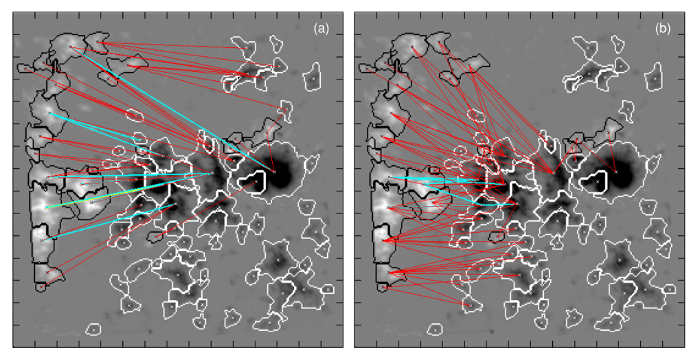
Free energy – Relative helicity diagram of solar ARs (Tziotziou et al. 2012)
- Blue diamonds : Non-flaring ARs
- Red squares/asterisks : M-/X-class flaring ARs
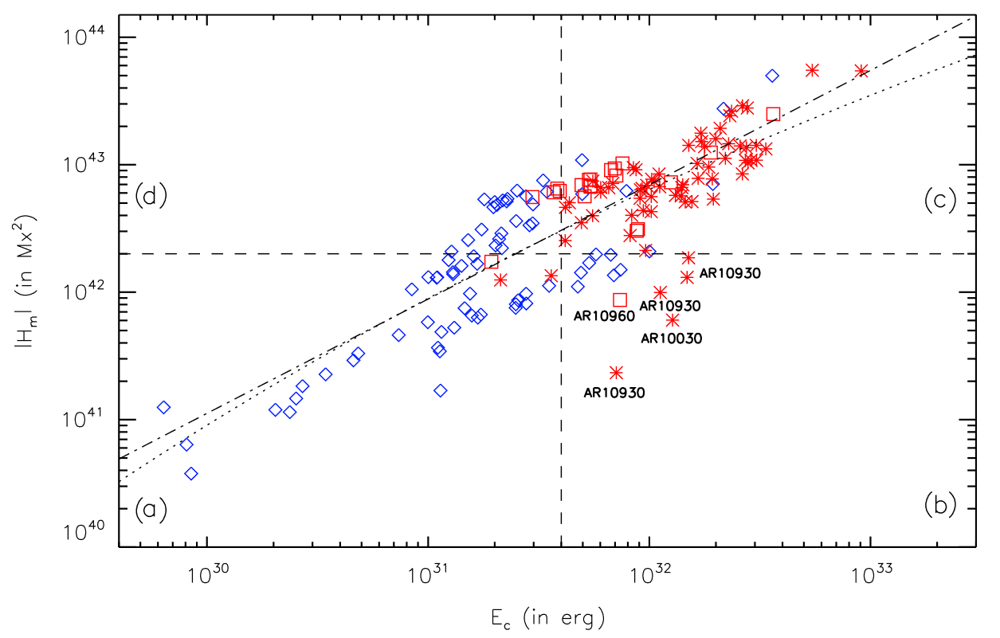
- Threshold for relative magnetic helicity H_\text{V}
(denoted as |H_m| in this diagram)
|H_\text{V}| \sim 2 \times 10^{42} \text{ Mx}^2
- Threshold for free magnetic energy E_\text{free}
(denoted as E_\text{c} in this diagram)
E_\text{free} \sim 4 \times 10^{31} \text{ erg}
- Scaling relation (Tziotziou et al. 2014)
|H_V| \propto E_\text{free}^{0.84 \pm 0.05}
Relative magnetic helicity as a diagnostic of solar eruptivity (Pariat et al. 2017)
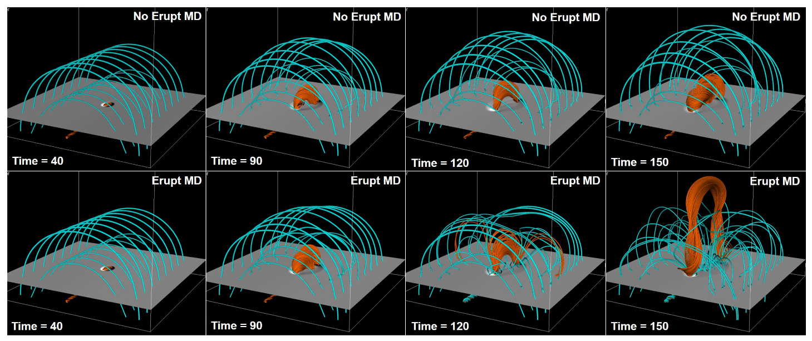
- 3D visco-resistive MHD simulations
- ND : no arcade
- WD : weak arcade
- MD : medium arcade
- SD : strong arcade
- from t = 0 to t=200
- t < 30 : emerging flux rope rises in the convection zone
- t \in [30, 120] : pre-eruptive phase
- t \in [120, 150] : eruptive phase
- t > 150 : post-eruptive phase
Relative magnetic helicity as a diagnostic of solar eruptivity (Pariat et al. 2017)
H_V = H_\text{J} + H_\text{PJ}
E = E_\text{free} + E_\text{p}
Here, E = E_\text{mag} and E_\text{inj} = E_\text{mag} - E_\text{mag}(t=0)
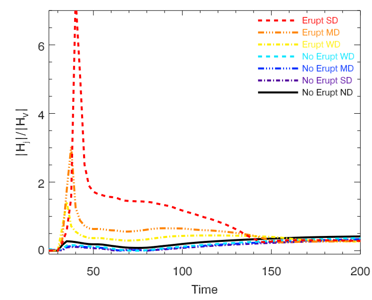
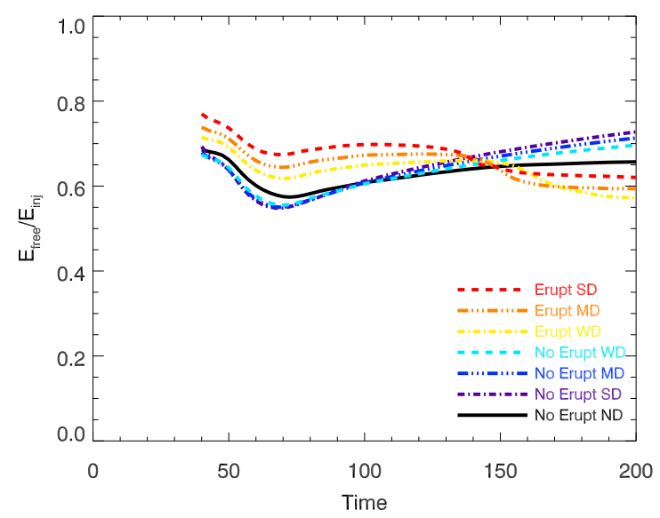
Relative magnetic helicity as a diagnostic of solar eruptivity (Pariat et al. 2017)
H_V = H_\text{J} + H_\text{PJ}
E = E_\text{free} + E_\text{p}
Here, E = E_\text{mag} and E_\text{inj} = E_\text{mag} - E_\text{mag}(t=0)
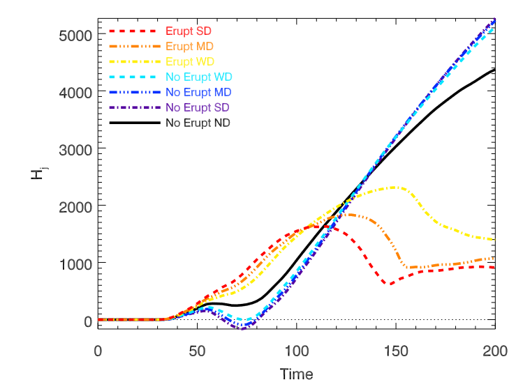
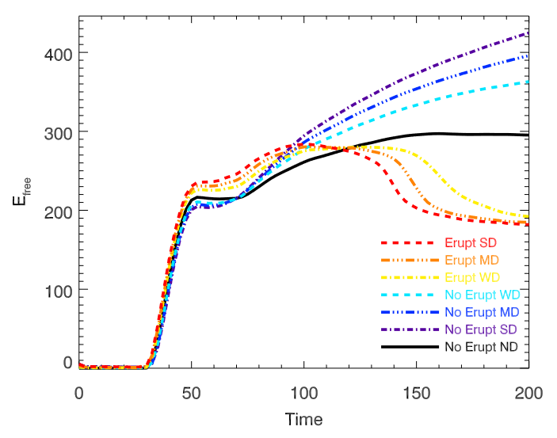
Changes of Magnetic Energy and Helicity in Solar ARs from Major Flares (Liu et al. 2023)
- Here, H = H_V
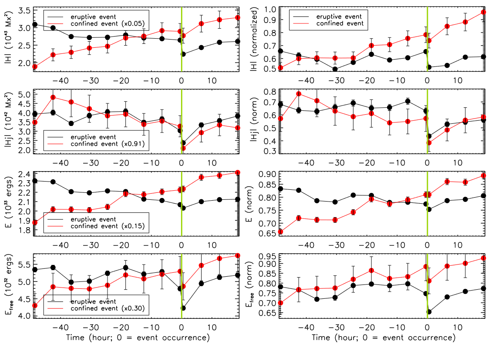
Surface-calculated quantities - SHARP parameters
- SOLAR FLARE PREDICTION USING SDO/HMI VECTOR MAGNETIC FIELD DATA WITH A MACHINE-LEARNING ALGORITHM (Bobra et al. 2015)
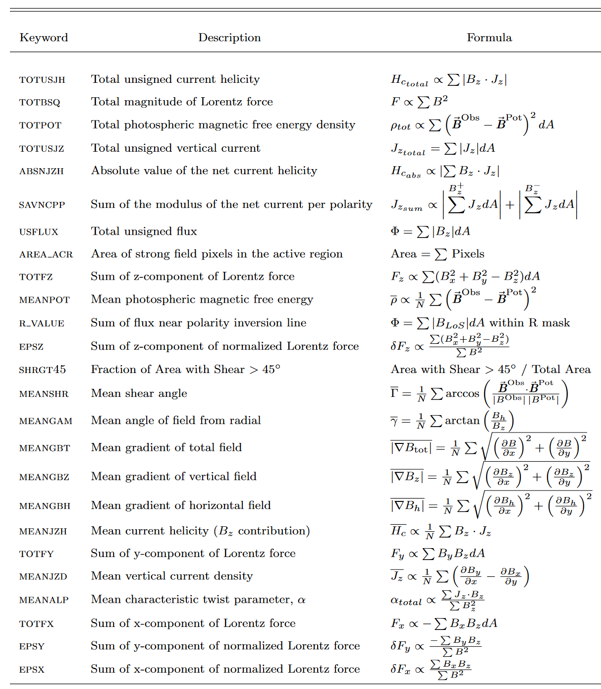
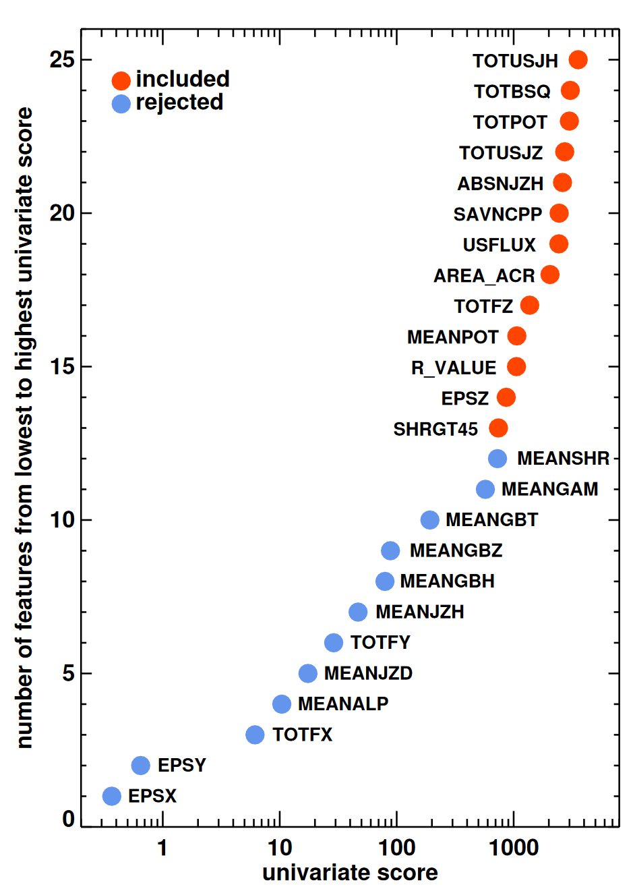
Surface-calculated quantities - \mathbf{v} or \mathbf{E}
- \mathbf{v} : DAVE4VM (differential affine velocity estimator for vector magnetograms) (Schuck 2008)
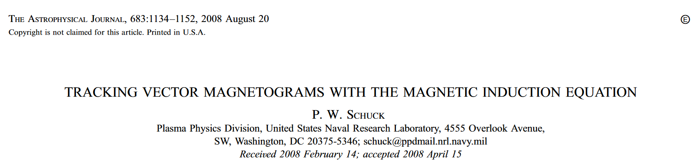
Surface-calculated quantities - \mathbf{v} or \mathbf{E}
- \mathbf{E} : PDFI_SS (Fisher et al. 2020)
- PDFI : poloidal–toroidal decomposition (PTD) plus Doppler plus Fourier local correlation tracking (FLCT) plus ideal
- SS : spherical staggered
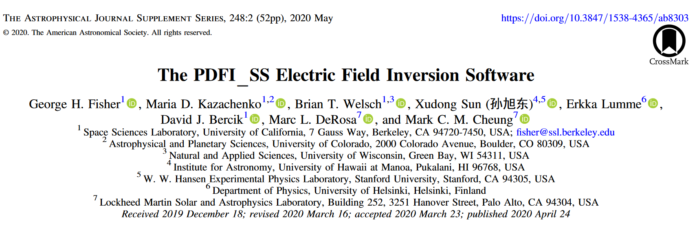
Surface-calculated quantities - \mathbf{v} or \mathbf{E}
- DAVE4VM vs PDFI_SS (Wang et al. 2023)
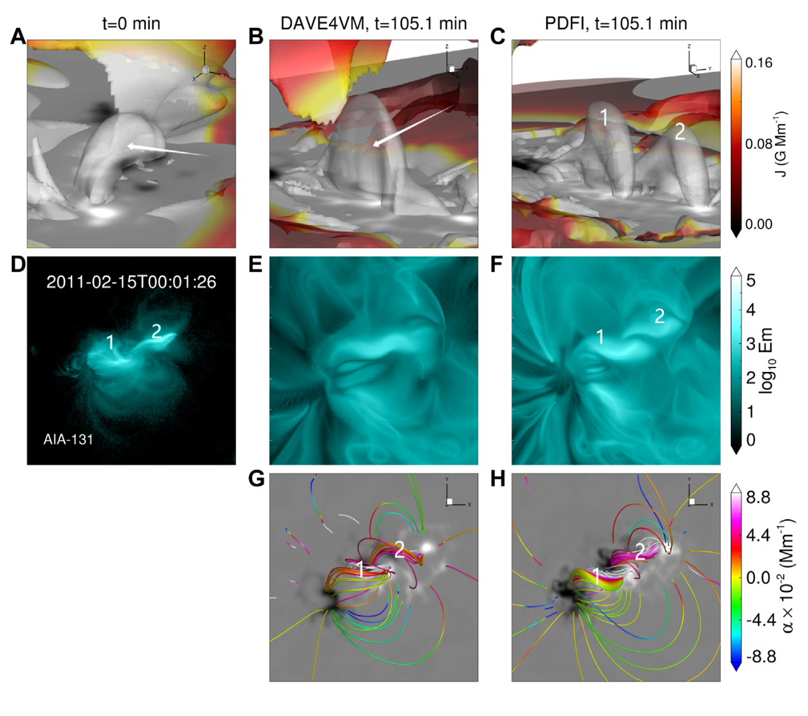
Surface-calculated quantities - Flux of quantities
- Magnetic energy (Poynting) flux (Schuck 2006; Guo et al. 2017b; Liu et al. 2023)
\left.\frac{dE}{dt}\right|_{S} = \frac{1}{4\pi}\int_{S}B_t^2V_{\perp n}\rm{d}S - \frac{1}{4\pi}\int_{S}(\mathbf{B}_t \cdot \mathbf{V}_{\perp t})B_n \rm{d}S
- Flux of magnetic helicity (Berger 1984; Chae 2001; Liu et al. 2023)
\left.\frac{dH}{dt}\right|_{S} = 2\int_{S}(\mathbf{A}_p \cdot \mathbf{B}_t)\rm{d}S - 2\int_{S}(\mathbf{A}_p \cdot \mathbf{V}_{\perp t})B_n \rm{d}S
Surface-calculated quantities - Flux of quantities
- On short timescales (~1 hr) after eruptive flares, there are decreases in both the coronal magnetic energy, E, and helicity H; and their photospheric fluxes, dE/dt and dH/dt. (Liu et al. 2023)
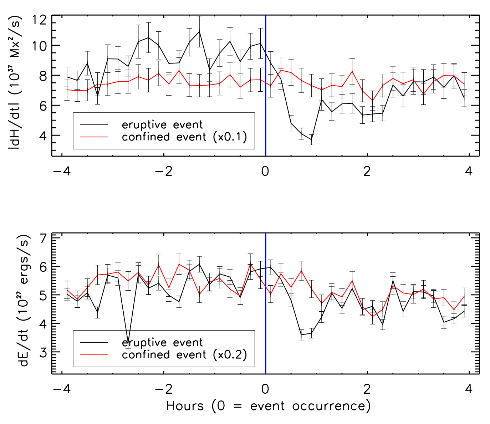
Surface-calculated quantities - Flux of quantities
- Fluxes of topological quantities (Alielden et al. 2023)
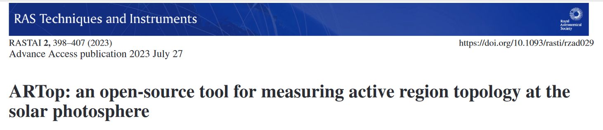
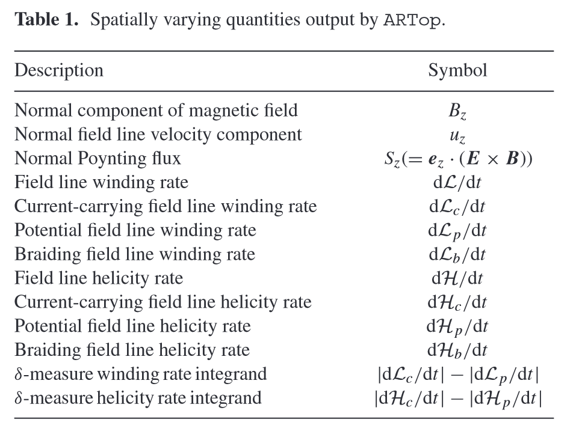
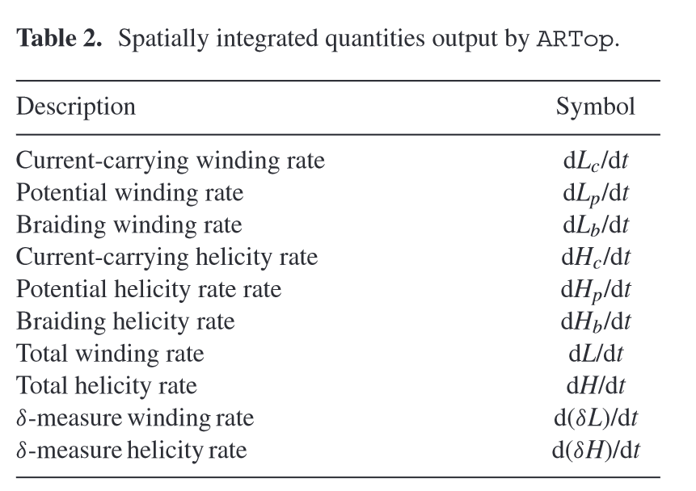
Surface-calculated quantities - Flux of quantities
- Fluxes of topological quantities (Alielden et al. 2023)
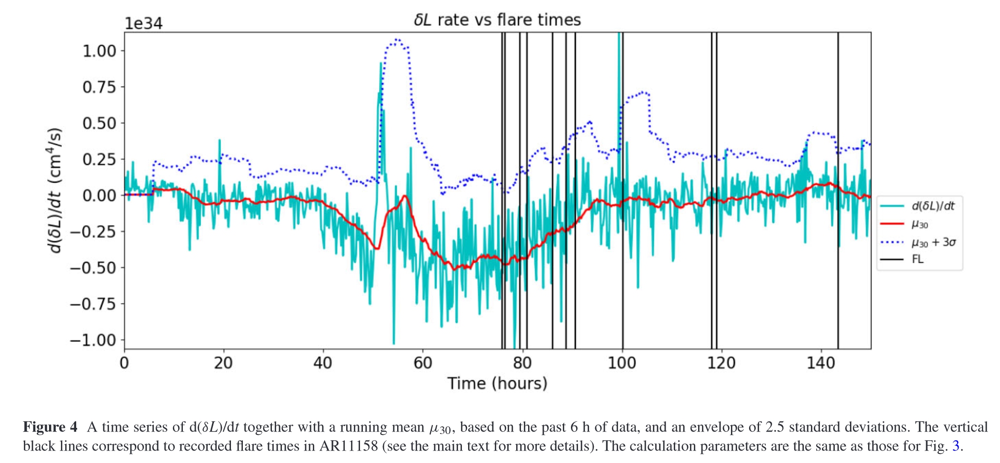
Magnetic flux rope (MFR)
Magnetic flux rope (MFR) can be defined as a coherent group of magnetic field lines winding an axis with more than one turn (Liu et al. 2016; Duan et al. 2019).
Magnetic flux rope of the Titov–Démoulin semi-analytical NLFFF model (Titov et al. 1999; Guo et al. 2017a)
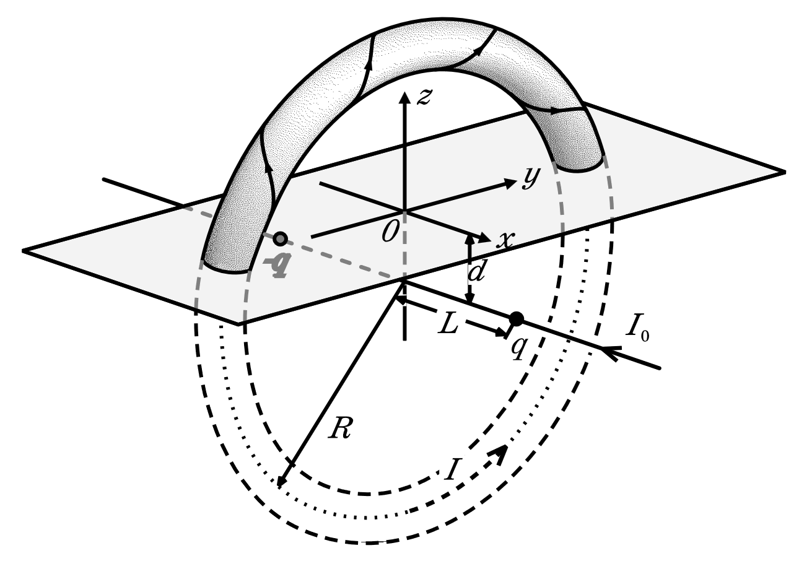
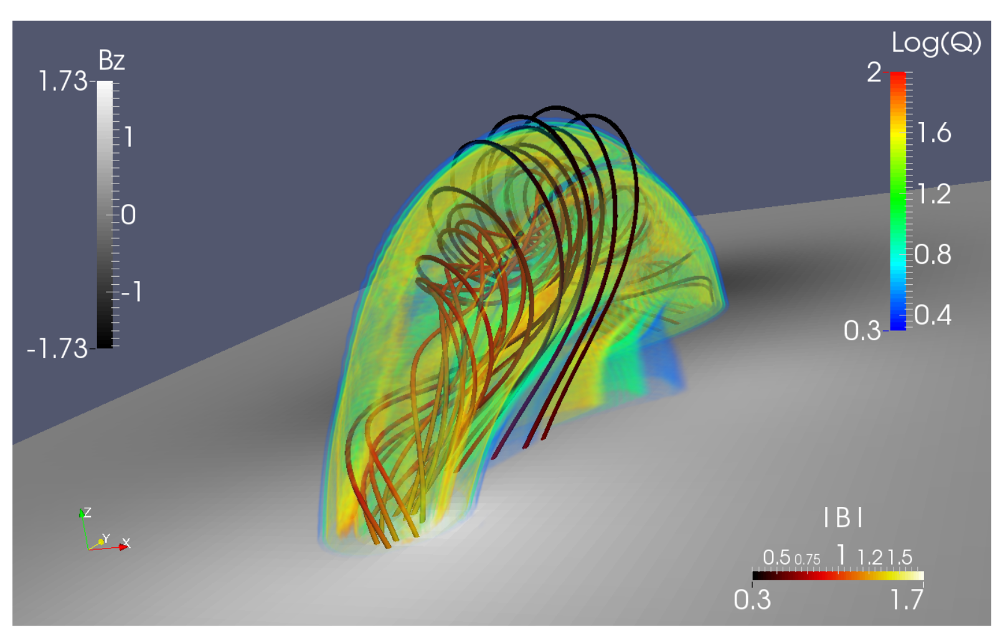
Kink instability (KI)
- Magnetic twist number T_\text{w} for a given (closed) field line (Berger et al. 2006; Jing et al. 2018; Duan et al. 2019)
T_\text{w} = \int_L \frac{(\nabla \times \mathbf{B}) \cdot \mathbf{B}}{4 \pi B^2} \rm{d}l
- If the magnetic field is force-free, i.e., \nabla \times \mathbf{B} = \alpha \mathbf{B},
T_\text{w} = \frac{1}{4\pi} \int_L \alpha \rm{d}l
- KI parameter - There is a critical value to determine whether MFR is eruptive or not.
|T_\text{w}| > |T_\text{w}|_\text{crit}
- T_\text{w} is not identical to the classical winding number of field lines about a common axis, the parameter often used in the analysis of the helical KI. Nevertheless, accroding to Liu et al.’s (2016) analysis, the magnetic field line that possesses the extremum value (maximum or minimum) of |T_\text{w}| in a MFR can be reliably regarded as the rope axis, and T_\text{w} computed in the vicinity of the axis approaches the winding number. (Duan et al. 2019)
Identification of MFRs (Duan et al. 2019)
- MFRs generally exist prior to major solar flares. With a rigorous definition, over 90% of the studied events have well-defined MFRs in the flare site, i.e., a coherent group of magnetic field lines with twists above one turn and the field line possessing the peak value of twist being the rope axis. The other 10% of events also have MFR-like structures as their magnetic twist numbers are very close to one. Most of the MFRs have corresponding filaments or filament channels as seen in SDO/AIA 304 Å observations. (Duan et al. 2019)
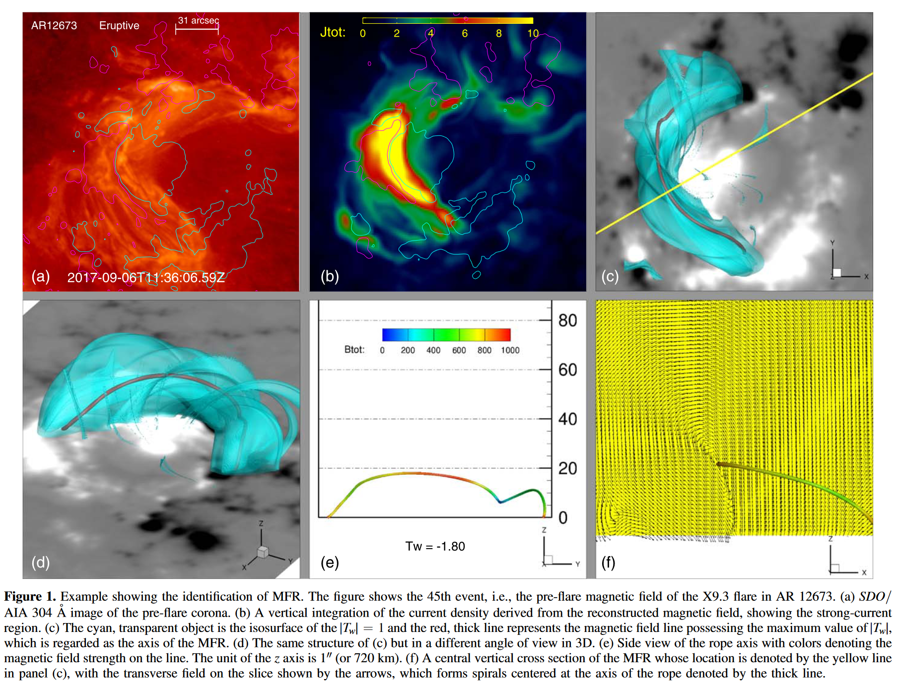
Identification of MFRs (Duan et al. 2019)
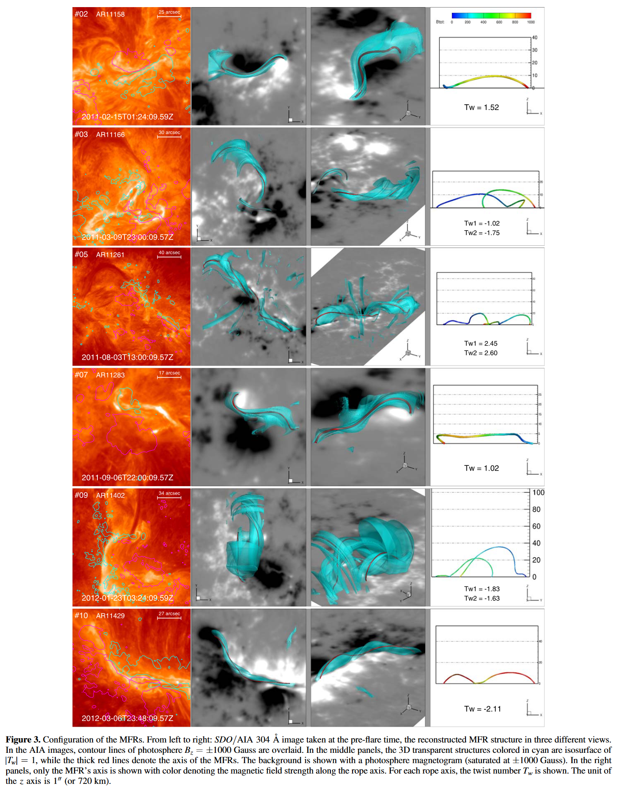
Torus instability (TI)
- Decay index n (Kliem et al. 2006; Jing et al. 2018; Duan et al. 2019)
n = - \frac{\partial \log (B_\text{ext})}{\partial \log (h)}
B_\text{ext} : external strapping field stabilizing the MFR (usually potential field)
h : vertical height locally, radial distance globally, or oblique height
TI parameter - There is a critical value to determine whether MFR is eruptive or not.
n > n_\text{crit}
Torus instability (TI)
- Illustration of calculating the decay index n at the apex of the MFR axis (Duan et al. 2019)
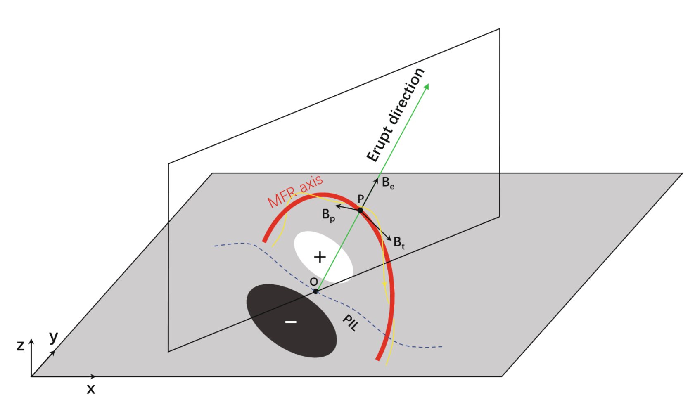
TI Parameter - KI Parameter diagram
- Laboratory experiment designed to study the Sun-like line-tied MFRs (Myers et al. 2015)
TI Parameter - KI Parameter diagram
- Laboratory experiment designed to study the Sun-like line-tied MFRs (Myers et al. 2015)
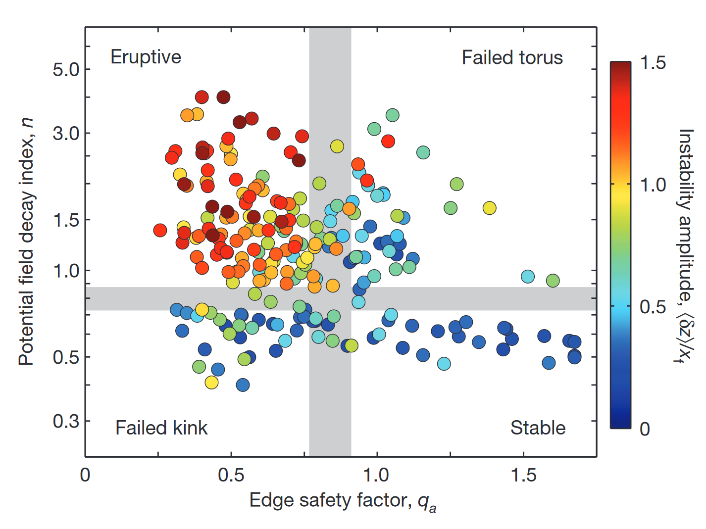
- Potential field decay index n
n(z) = - \frac{z}{|\mathbf{B}_\text{pot}|}\frac{\partial |\mathbf{B}_\text{pot}|}{\partial z}
- Edge safety factor q_a : inverse of the edge magnetic twist \iota_a
q_a = \frac{2\pi}{\iota_a} = \left.\frac{\rm{d}\Phi_\text{T}}{\rm{d}\psi_\text{P}}\right|_{r=a} \approx \frac{2\pi a}{L}\frac{B_\text{Ta}}{B_\text{Pa}}
TI Parameter - KI Parameter diagram
- Statistical Analysis of Torus and Kink Instabilities in Solar Eruptions (Jing et al. 2018)
- Black : confined flare
- Color : ejective flare
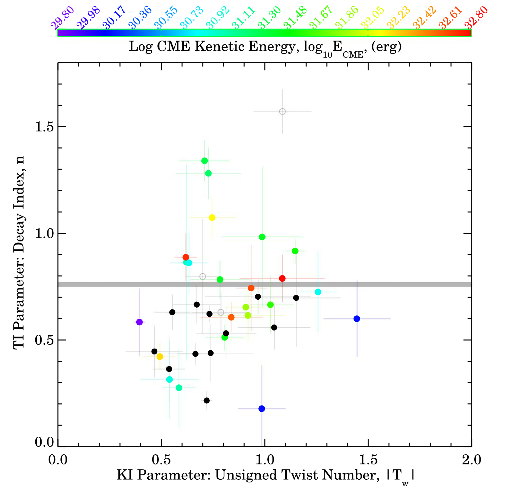
- T_\text{w} appears to play little role in discriminating between confined and ejective events
- The events with n \gtrsim 0.8 are all ejective, and all confined events have n \lesssim 0.8. However, n \gtrsim 0.8 is not a necessary condition for eruption because some events with n \lesssim 0.8 also erupted.
TI Parameter - KI Parameter diagram
- A Study of Pre-flare Solar Coronal Magnetic Fields: Magnetic Flux Ropes (Duan et al. 2019)
- Green : non-MFR event (|T_\text{w}|_\text{max} < 1)
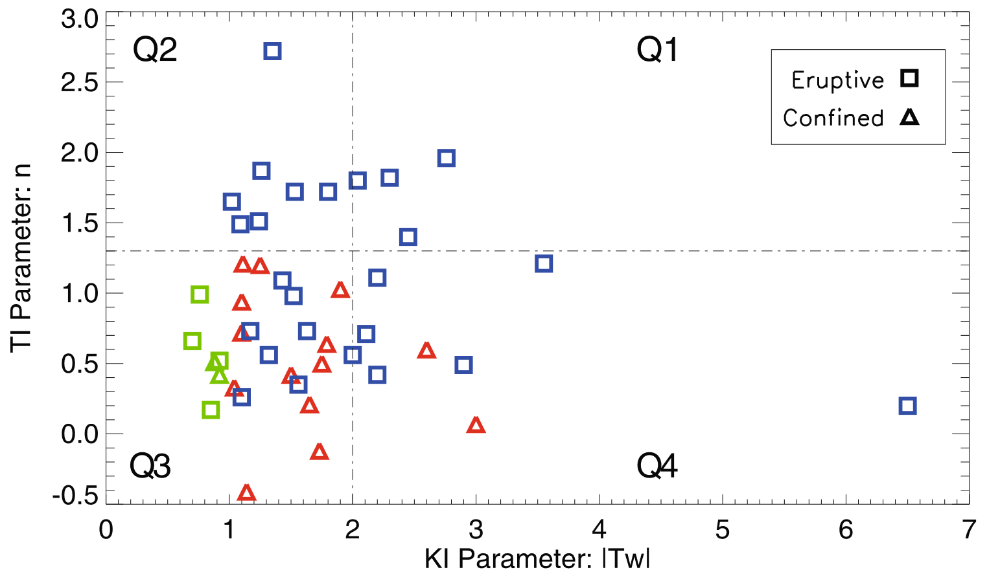
- It clearly shows lower limits for TI and KI thresholds, which are n_\text{crit}=1.3 and |T_\text{w}|_\text{crit}=2, respectively, as all the events above n_\text{crit} and nearly 90% of the events above |T_\text{w}|_\text{crit}| erupted. Furthermore, by such criterion, over 70% of the events can be discriminated between eruptive and confined flares, and KI seems to play a nearly equally important role as TI in discriminating between the two types of flares. More than half of the events with both parameters are below the lower limits, and 29% are eruptive. These events might be triggered by magnetic reconnection rather than MHD instabilities.
Tether-cutting reconnection
- Tether-cutting reconnection scenario proposed by Moore et al. (2001) explains the eruption of the sigmoidal field often observed before solar eruptions. (Ishiguro et al. 2017)
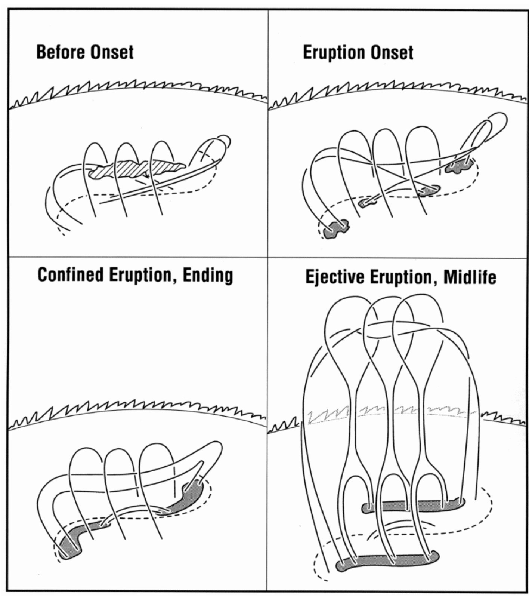
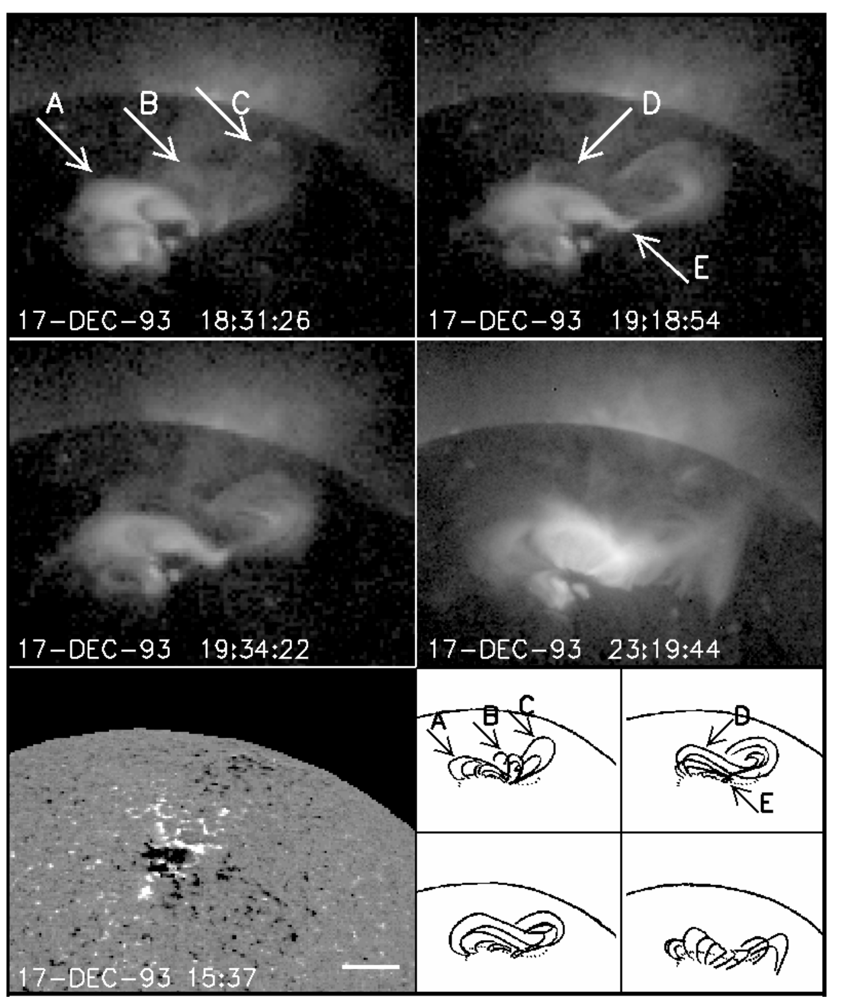
Tether-cutting reconnection
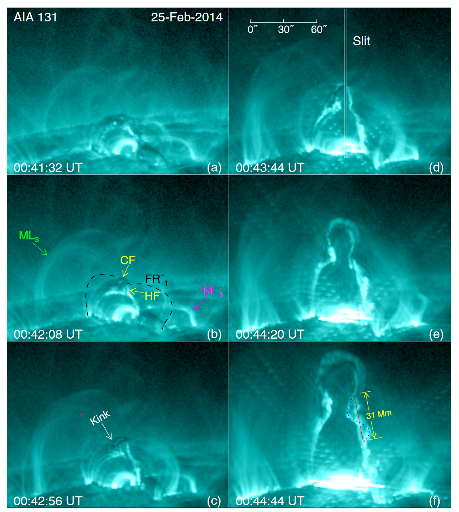
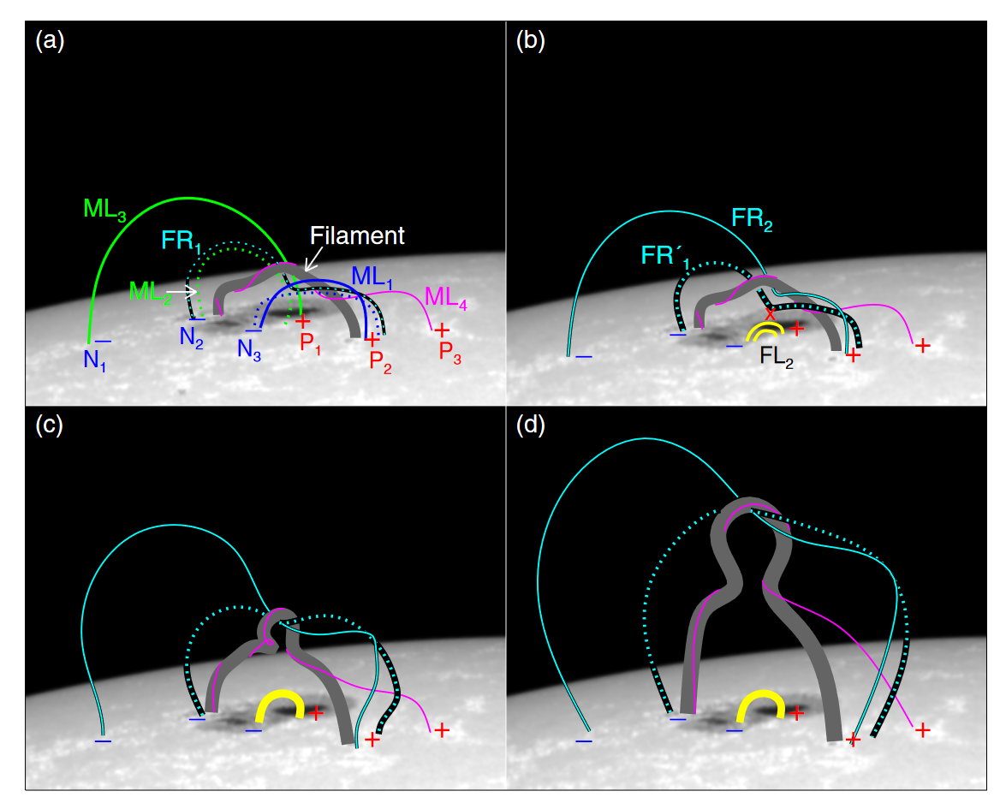
Double arc instability (Ishiguro et al. 2017)
- The tether-cutting scenario proposes that the internal reconnection proceeds in the core of the sheared magnetic field in the pre-eruptive phase, and it may form a double arc flux rope (sigmoidal field) that carries an electric current (Ishiguro et al. 2017).
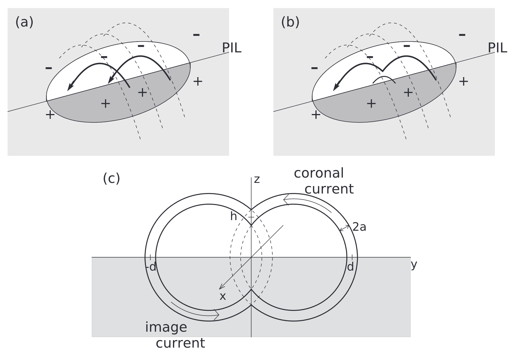
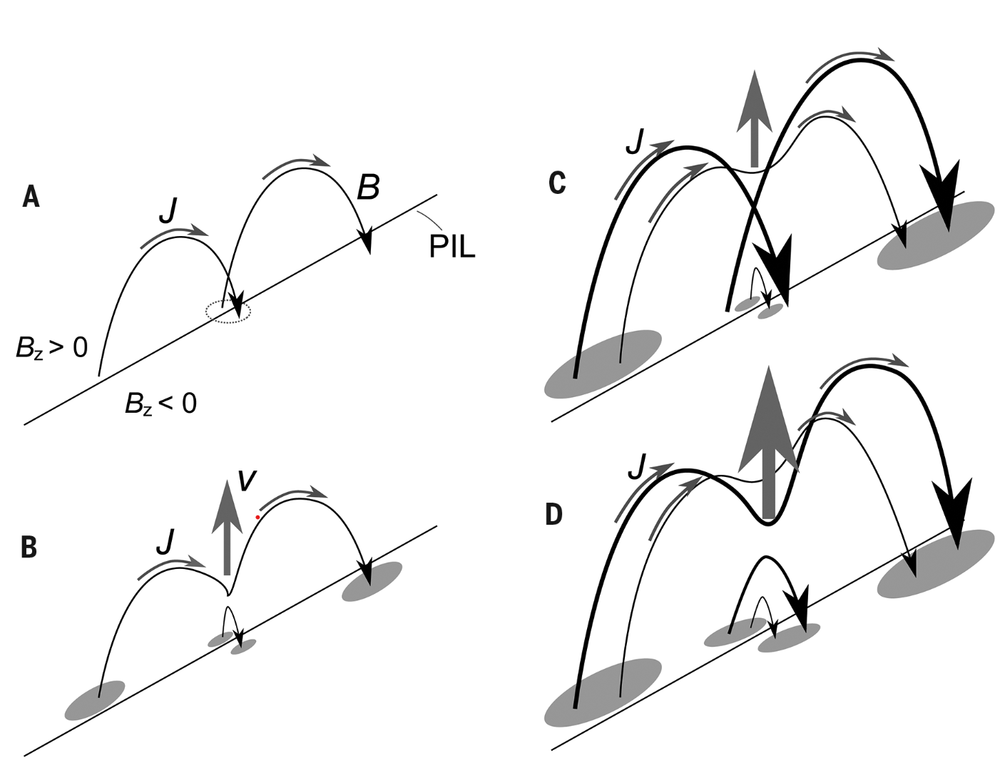
Double arc instability
- DAI parameter \kappa (Ishiguro et al. 2017; Muhamad et al. 2018; Kusano et al. 2020)
\kappa = T_\text{w} \frac{\Phi_\text{rec}}{\Phi_\text{over}}
T_\text{w} : magnetic twist of the DA
\Phi_\text{rec} : magnetic flux within DA
\Phi_\text{over} : magnetic flux overlying DA- There is a threshold.
\kappa > \kappa_0
A physics-based method that can predict imminent large solar flares (Kusano et al. 2020)
- \kappa is evaluated by
\kappa = \left|\frac{\int_\text{rec} T_\text{w}\rm{d}\Phi}{\Phi_{\text{over}}}\right|
where the integral is taken over the magnetic flux subject to the trigger-reconnection which forms the DA.
- If the DA is formed by the magnetic reconnection of magnetic fluxes rooted near the PIL, then \kappa can be calculated by the area integral over the reconnection-region S_\text{rec} on the photosphere: \kappa = \left|\frac{\int_{S_\text{rec}} \tau\rm{d}S}{\Phi_{\text{over}}}\right|
where
\tau = T_\text{w}|B_z|
is defined as the magnetic twist flux density with the vertical magnetic field B_z.
\kappa-scheme (Kusano et al. 2020)
- calculate T_\text{w}
- calculate \tau = T_\text{w} |B_z|
- calculate B_{\text{np}} = |\mathbf{B}_{\text{h}} - \mathbf{B}_\text{p}|
- identify multiple High Free-Energy Regions (HiFERs) using the condition B_\text{np} > B_0 = 1000 \text{ G}
- sort the HiFERs by the size (largest size is the fisrt HiFER). S_{H, i} is the area of the i-th HiFER
- select one point in PIL within HiFER
- consider hypothetical reconnection region as a circle with r
- calculate unsigned magnetic flux of each pole
- for area with small unsigned magnetic flux, calculate \int_{S_\text{rec}} \tau \rm{d}S
- identify magnetic field lines rooted on the hypothetical reconnection region (predicted trigger-reconnection region)
- identify strongest sheared field line among them, which is defined by field line that reaches farthest from the reconnection region
- calculate \Phi_{\text{over}} for all flux crossing over the strongest sheared field line
- calculate \kappa = \left| \frac{\int_{S_\text{rec}} \tau \rm{d}S}{\Phi_{\text{over}}} \right|
- since \kappa depends on r (radius of reconnection region), we can find the minimum r while satisfying \kappa > \kappa_0 = 0.1
- The minium r is the critical length scale r_c
- for each point with r_c, calculate the area of the footprint of the overlying field within the HiFER S_r
- calculate the first level of releasable energy E_r = \displaystyle \frac{S_r ^{1/2}}{8\pi} \int_{S_r} B^2_{\text{np}} \rm{d} S, which is the mininum energy of the flare driven by a DAI
- calculate the second level of releasable energy for i-th HiFER E_{H, i} = \displaystyle \frac{S_{H, i} ^{1/2}}{8\pi} \int_{S_{H, i}} B^2_{\text{np}} \rm{d} S
- calculate the total free energy of an AR E_{\text{AR}} = \displaystyle \sum_i E_{H, i}
\kappa-scheme (Kusano et al. 2020)
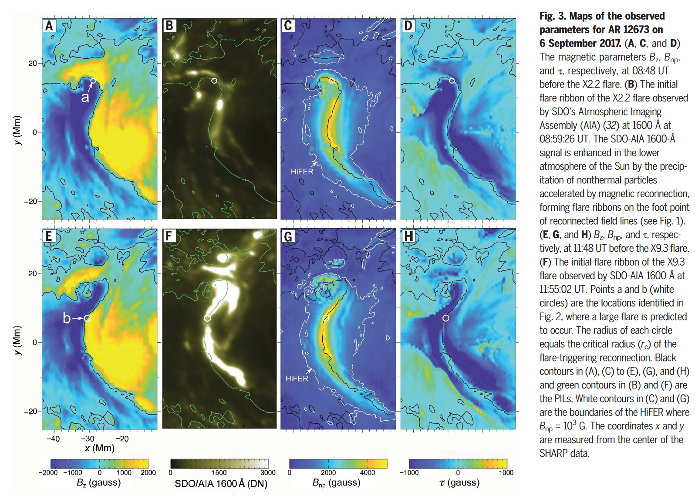
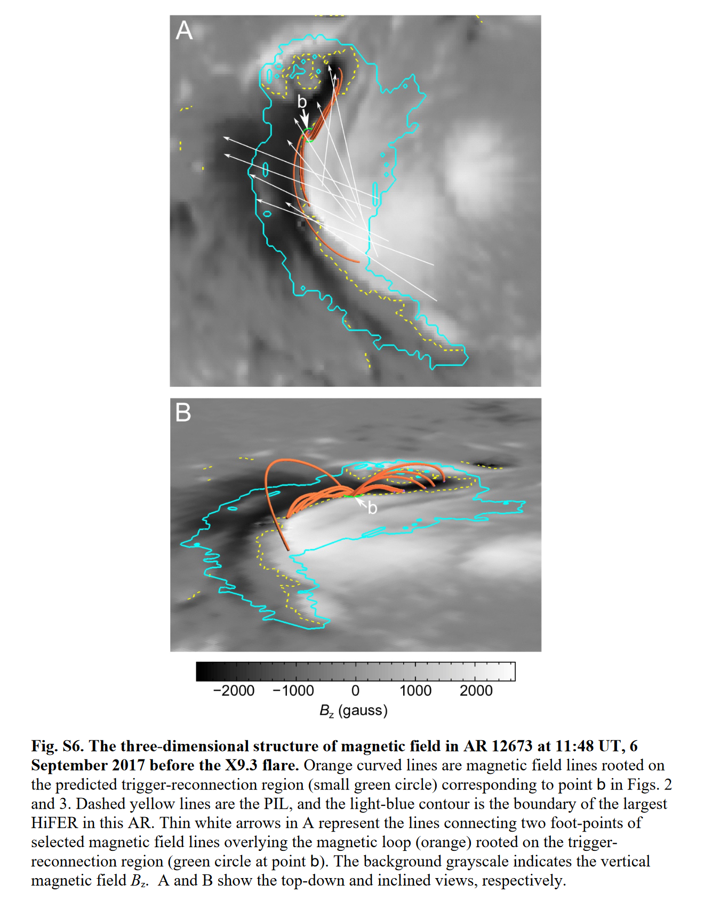
A physics-based method that can predict imminent large solar flares (Kusano et al. 2020)
- If any point on a PIL satisfies the conditions r_c < 1 \text{ Mm} and E_r > 4 \times 10^{31} \text{ erg}, an X-class flare usually occurs.
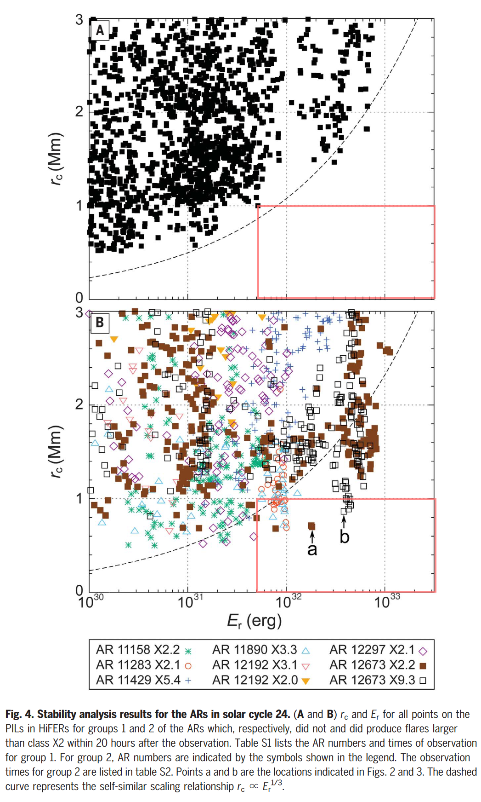
Magnetic topology analysis
- The random or user-defined tracing of magnetic field lines does not guarantee that key features of the magnetic field will be identified.
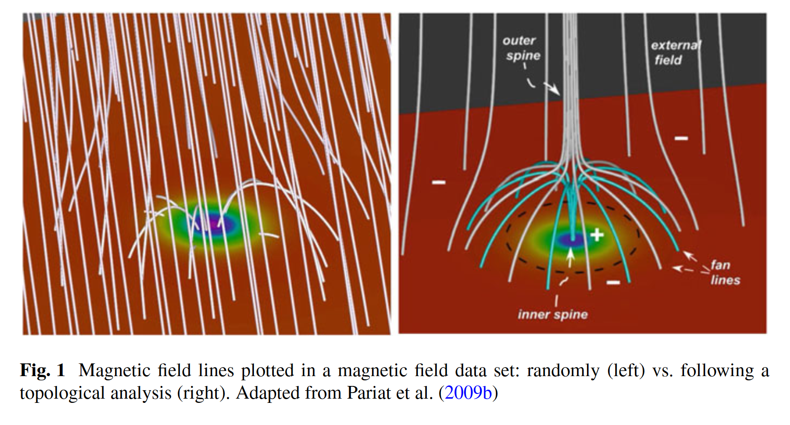
Magnetic reconnection, responsible for changing both the topology and geometry of a magnetic field, is a typical example of a phenomenon whose occurrence is strongly associated with the geometry of the magnetic field.
In particular, magnetic reconnection is linked to the formation of intense field-aligned current sheets, that are induced by the existence of gradients of the magnetic field, following Ampère’s equation (\mu_0 \mathbf{J} = \nabla \times \mathbf{B}).
These currents develop preferentially in specific locations of the magnetic field, that is in regions where the connectivity of the magnetic field is discontinuous.
The aim of the magnetic topology is to determine the locations of such regions.
Separatrices
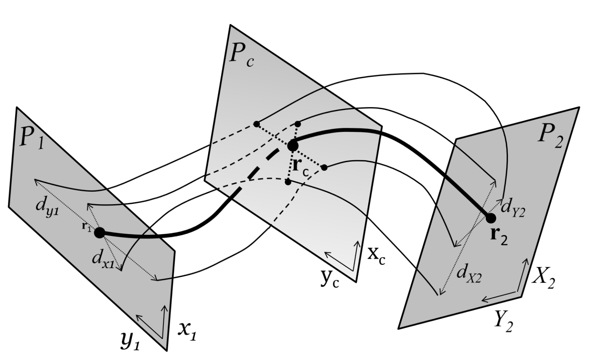
Let us consider a field line which links the footpoint \mathbf{r}_1 of coordinate (x_1, y_1) of the plane P_1 to the footpoint \mathbf{r}_2, of coordinate (X_2, Y_2) of the plane P_2.
Two mappings exist that associate a footpoint on one plane to the other: the mapping \Pi_{12} from P_1 to P_2: \mathbf{r}_1(x_1, y_1) \mapsto \mathbf{r}_2(X_2, Y_2); and the inverse mapping \Pi_{21} from P_2 to P_1: \mathbf{r}_2(X_2, Y_2) \mapsto \mathbf{r}_1(x_1, y_1).
A separatrix is present when the mapping contains a discontinuity, i.e. where the function \Pi_{12} (or \Pi_{21}) is discontinuous.
Separatrices - Regions of magnetic field discontinuity
- Null points \mathbf{x}_\text{NP}
\mathbf{B}(\mathbf{x}_\text{NP}) = \mathbf{0}
Separatrices - Regions of magnetic field discontinuity
- Bald patches (BPs)
- Regions where some field lines touch the boundary tangentially
\mathbf{x}_\text{BP} \in \partial V \quad \text{with } \partial V \text{ a line-tying boundary}
B_n (\mathbf{x}_\text{BP}) = 0
(\mathbf{B} \cdot \nabla B_n)(\mathbf{x}_\text{BP}) > 0
Separatrices - Regions of magnetic field discontinuity
- Separators
- 1D topological structures and are found at the intersection of two separatrix surfaces.
- Separators can be found to connect two 3D magnetic null points.
Quasi-Separatrix Layers (QSLs)
Numerous solar flares, however, have not been associated with separatrices, i.e. with magnetic-field connectivity discontinuities. This has led to the generalization of the concept of separatrices to Quasi-Separatrix Layers (QSLs). QSLs were introduced in Démoulin et al. (1996) and are defined as regions where the mapping of the field lines, while still continuous (unlike seperatrices), possesses very strong gradients.
QSLs are 3D magnetic volumes of high squashing factor Q, in which the magnetic connectivity varies strongly.
Squashing factor Q
- Mappings
- \Pi_{12} : \mathbf{r}_1(x_1, y_1) \mapsto \mathbf{r}_2(X_2, Y_2)
- \Pi_{21} : \mathbf{r}_2(X_2, Y_2) \mapsto \mathbf{r}_1(x_1, y_1).
- Jacobian matrices associated with the mappings
D_{12} = \frac{d\mathbf{r}_2}{d\mathbf{r}_1} = \begin{pmatrix} \displaystyle \frac{\partial X_2}{\partial x_1} & \displaystyle \frac{\partial X_2}{\partial y_1} \\ \\ \displaystyle \frac{\partial Y_2}{\partial x_1} & \displaystyle \frac{\partial Y_2}{\partial y_1} \end{pmatrix} \quad \quad D_{21} = \frac{d\mathbf{r}_1}{d\mathbf{r}_2} = \begin{pmatrix} \displaystyle \frac{\partial x_1}{\partial X_2} & \displaystyle \frac{\partial x_1}{\partial Y_2} \\ \\ \displaystyle \frac{\partial y_1}{\partial X_2} & \displaystyle \frac{\partial y_1}{\partial Y_2} \end{pmatrix}
- Norms of the Jacobian matrices
N_{12} = \sqrt{\left( \frac{\partial X_2}{\partial x_1} \right)^2 + \left( \frac{\partial X_2}{\partial y_1} \right)^2 + \left( \frac{\partial Y_2}{\partial x_1} \right)^2 + \left( \frac{\partial Y_2}{\partial y_1} \right)^2}
N_{21} = \sqrt{\left( \frac{\partial x_1}{\partial X_2} \right)^2 + \left( \frac{\partial x_1}{\partial Y_2} \right)^2 + \left( \frac{\partial y_1}{\partial X_2} \right)^2 + \left( \frac{\partial y_1}{\partial Y_2} \right)^2}.
- Determinants of the Jacobian matrices
\Delta_{12} = \text{det}(D_{12}) \quad \quad \Delta_{21} = \text{det}(D_{21})
- Squashing factor (or squashing degree) Q for a field line
Q = \frac{N_{12}^2}{|\Delta_{12}|} = \frac{N_{21}^2}{|\Delta_{21}|}
QSL reconnection
- QSLs are preferential sites for electric current build-up and magnetic reconnection.
QSL reconnection
- QSLs have been associated with flare ribbons in a large number of events.
FastQSL (Zhang et al. 2022)
- Computation time : 107s for 900 x 540 x 360 grid data